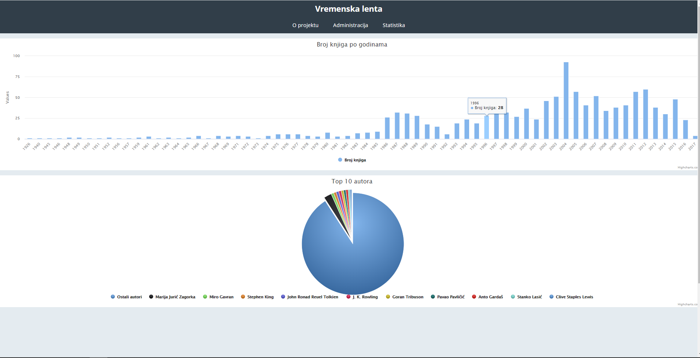

My web development consists of 90%
Wordpress and 10% everything else (that excludes everything learned through obligatory education).
Web languages used/learned during education: HTML, CSS, JS,
PHP. My very first web project was an application for learning japanese letters. You can check it
here but remember, its a beginner's first attempt
at HTML and Javascript, also unfinished :P. Most of the code uses Javascript Canvas element.
FUN FACT: The professor wanted me to use as little files as possible, so what I thought off at that time was to make canvases invisible
and position them on huge x and y positions so that they wouldn't interfere with their invisible clickable spots. That's why the window can be scrolled. Would love to recreate the app on a different platform.
For more backend action, also my very first contact with programming, there is the father of lots of modern languages, C. In university, Python and
Java. It's been a lot of years since I used C and Python and I pretty much forgotten their syntax (talking mostly for Python since languages borrow C's syntax a lot), but they
were useful to develop the "how to read/think/solve problems like a programmer" sense, which proved to be very important as I saw colleages that didn't have programming before college struggle with it. Other than that, I used C# for Unity purposes (but can't say I know C#, rather understand the basics enough
to tweak finished scripts for my needs).
Other languages that I had contact with are XML, RDF, [have a feeling there are more but forgotten about them.]...
WORDPRESS
Less coding and more plugin management, learning the environment and community and a bit of custom code editing. Here's a list of sites I made freelancing (all sites are made for real customers) in no specific order (although it will be obvious which were made early on and
which later on :) ).
There are some other instances where I didn't create the whole website, but rather customised shops (variable products, different shippings, etc.), translated to other languages, remade parts of website with better plugins etc.
PHP
Regarding PHP, it's the last language I learned (as part of curriculum). The projects I can offer to show some code are on Github and require setting up a database.
Kamenskarepapir (Rock paper scissors)
- started as a obligatory assignment, the point was to make a website that connects to a databases and does something... so I made a website to play rock paper scissors against
a computer (first you have to register a simple account) and there's a couple of database tables, 1 for storing users, 1 for admins etc. There's also a section where users can add comments, but admins can also
edit/delete etc. You can check it
here.
Youtube (clone, unfinished)
- started a tutorial for OOP PHP programming, however in the meantime started working on an Android project and never took the time to finish this. If I recall correctly, as of February 2020,
the last update I made is an empty website, but the upload function working, meaning you can upload a video, describe it like you would on Youtube and it would appear in one of the projects's folders and database, along with creating 3
thumbnails from the video. You can check it
here.
Data visualization
- can't show the code since it's private, but here's an image. Basically it's data visualization using JS (D3.js), PHP and JSON. (my contribution is the data visualization part only, not the whole site)

JAVA
The most recent language I learned, as part of the curriculum. Working in Android Studio, I've learned basic OOP methods and besides the exercises in class, made a
simple application for a cybersecurity campaign for elementary schools. It's really simple, a hub with buttons
that redirect to local html files stored in the app's directory, 2 image sliders that use viewpager and a quiz (but it's a big difference working on something relevant and real, with deadlines, expectations, doing a project from start to finish instead of just doing
something for the sake of learning etc.). An error I made is I didn't take into account the small hand of people that have a bit older versions of Android, which ended up them not being able to use the app.
As of March 2020, started on working on an another app, for Glagolitic script.
OTHERS
I'll fill this more as I go, but so far the only relevant thing I would leave here is that I recently did some
QA (Quality Assurance) exercises during class, using Webdriver.io.